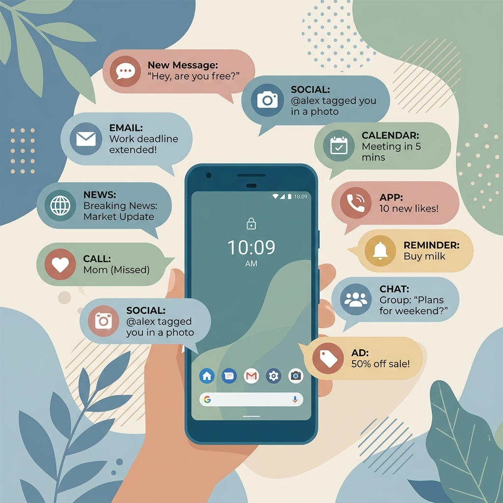

הסחות דעת וסביבת למידה
הסביבה שבה אנחנו לומדים קובעת את רמת הריכוז שלנו. למדו איך לנטרל רעשי רקע, התראות דיגיטליות, ולעצב סביבת עבודה אופטימלית.

התמכרות למסכים והסחות דעת דיגיטליות
הודעה חדשה מאינסטגרם!
מישהו הגיב לתמונה שלך
סרטון חדש בטיקטוק
דום-סקרולינג (Doom Scrolling)
גלילה אינסופית ברשתות חברתיות השואבת את תשומת הלב ופוגעת ביכולת להתמקד בטקסטים ארוכים.
תסמונת ההתראה הקופצת
לוקח למוח בממוצע 23 דקות לחזור לריכוז מלא לאחר הסחת דעת של התראה אחת בנייד.
התמכרות לתוכן קצר
צריכת תוכן קצר (Reels, TikTok) מורידה את טווח הקשב ומקשה על קריאת חומר אקדמי מורכב.
סביבת למידה טובה יותר
לפני: סביבה מסיחה
- תאורה חלשה או מסנוורת
- שולחן עמוס בניירות, כוסות וציוד לא רלוונטי
- טלפון מונח גלוי ליד הספרים
- רעש רקע (טלוויזיה, שיחות)
אחרי: סביבה ממוקדת
- תאורה טבעית או מנורת שולחן ממוקדת
- שולחן נקי, רק מחשב וחומר רלוונטי
- טלפון במצב טיסה או בחדר אחר
- אוזניות מסננות רעשים (או מוזיקת רקע מרגיעה)
טכניקות לשיפור הריכוז
🎧
מוזיקת ריכוז
האזנה לתדרים נמוכים (Lo-Fi), מוזיקה קלאסית או "רעש לבן" עוזרת למסך רעשי רקע ולהיכנס ל-Flow.
🛑
חוסמי אתרים (Blockers)
השתמשו בתוספים לדפדפן (כמו Cold Turkey או Forest) שחוסמים גישה לרשתות חברתיות בזמן הלמידה.
🧘
הכנה מנטלית
לפני תחילת הלמידה, קחו דקה לנשימות עמוקות וסדרו את המחשבות. זה מאותת למוח שהגיע הזמן להתמקד.